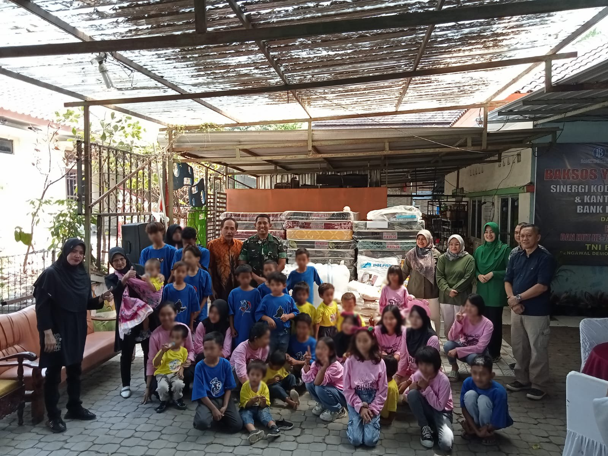

Yayasan Lentera Surakarta
Yayasan Lentera Surakarta adalah sebuah organisasi yang akan memberikan kontribusi nyata pada upaya pemberdayaan dan pendampingan masyarakat khususnya pada ODHA dan ADHA.
Prestasi
Kami
- Terakreditasi Tahun 2021
- Piagam Penghargaan Tahun 2019 dari Menteri Sosial RI
Latar Belakang Lentera
Yayasan Lentera Surakarta dirintis oleh beberapa orang relawan yang mempunyai perhatian pada isue pemberdayaan dan kesehatan masyarakat terutama pada perempuan dan anak-anak sejak tahun 2008. Berdirinya Lentera dilatar belakangi tingginya angka kemiskinan dan rendahnya derajat kesehatan masyarakat di Indonesia. Tingginya angka kemiskinan menjadi salah satu penyebab bagi rendahnya kwalitas hidup manusia terutama pada perempuan, anak dan komunitas marjinal lainnya.
Himpitan ekonomi yang semakin sulit dan tingkat pendapatan yang rendah mengakibatkan komunitas miskin susah untuk mengakses sektor kesehatan dan sektor pendidikan, terutama pada kelompok-kelompok masyarakat Tuna sosial seperti pekerja seks komersial (PSK), transgender, kelompok Gay, Bekas warga binaan Lembaga Pemasyarakatan serta Orang yang hidup dengan HIV/AIDS ( ODHA). Dampak yang yang ditimbulkan adalah adanya prostitusi baik secara langsung maupun tidak langsung, yang beresiko terjadinya penularan Penyakit Infeksi Menular Seksual dan Virus HIV.
Relawan di Lentera bekerja di komunitas dengan melakukan proses penjangkauan, pendampingan, penguatan matapencaharian dan advokasi. Strategi yang dibangun adalah bagaimana komunitas termasuk ODHA mampu untuk merencanakan program, membangun sinergi dengan pemerintah dan layanan kesehatan serta membangun jejaring dengan pihak-pihak yang terkait. Kerja-kerja yang dilakukan juga difokuskan untuk mereduksi stigma dan diskriminasi bagi Kelompok kelompok dampingan serta mendorong keterlibatan pemerintah untuk lebih memperhatikan kebutuhan mereka.
Berangkat dari permasalahan tersebut beberapa relawan sepakat untuk mendirikan sebuah Organisasi yang akan memberikan kontribusi nyata pada upaya pemberdayaan dan pendampingan masyarakat khususnya pada ODHA dan ADHA.
Program Pelayanan Kami
-
Advokasi
-
Shelter LENTERA
-
Kesehatan Sosial
Visi Kami
Menjadi organisasi yang mampu meningkatkan kesejahteraan dan kemandirian kelompok-kelompok sosial yang termarginalkan.
Misi Kami
Meningkatkan kesejahteraan anak-anak, terutama yang terinfeksi HIV, dengan pemenuhan Hak Anak sesuai
dengan Konvensi Hak Anak Internasional
Meningkatkan kesejahteraan perempuan, terutama yang terinfeksi HIV, dengan pemenuhan hak kesehatan dan
jaminan ekonomi keluarganya
Meningkatkan kesejahteraan ekonomi keluarga ODHA (Orang yang hidup dengan HIV)
Melakukan Advokasi kebijakan, pengurangan stigma dan diskriminasi, pendampingan hukum, pendampingan
terhadap korban kekerasan pada perempuan dan anak yang terinfeksi HIV
Melakukan pendampingan dan layanan kesehatan pada kelompok-kelompok pekerja sekkomersial, transgender
dan gay
Merangkul semua komponen dan elemen di semua sektor baik dari suwasta, pemerintah dan kelompok
masyarakat baik dalam negri maupun luar negri untuk terlibat dalam mendukung program dari LENTERA
- 
Mitra Kerja

Donatur yang setia mendukung Lentera
Kelompok masyarakat baik nasional maupun internasional